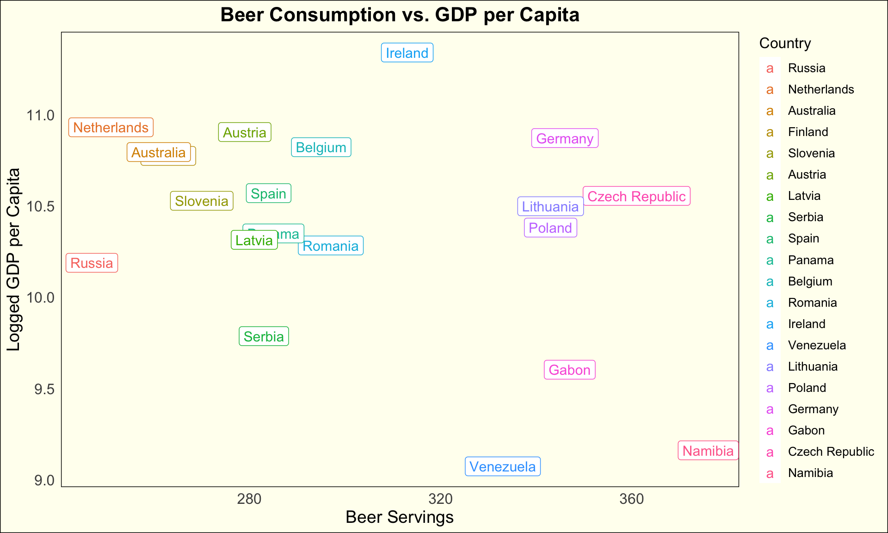
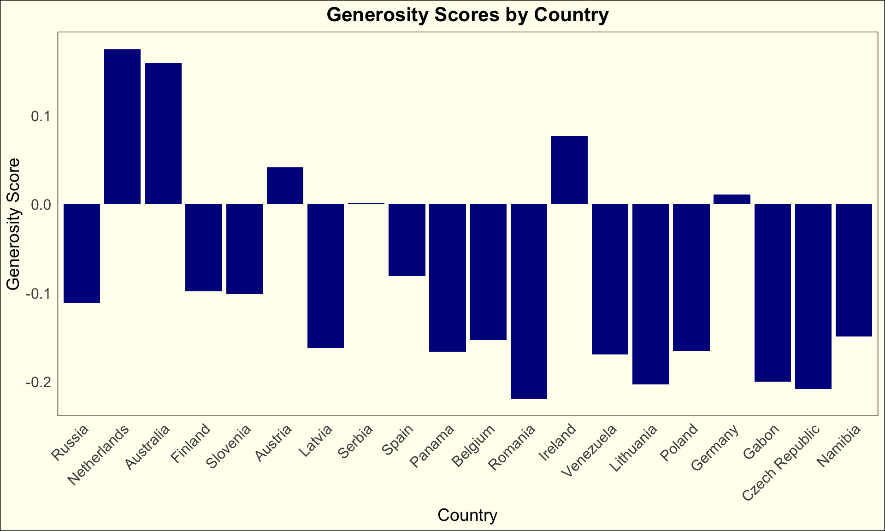

library(tidyverse)
library(here)
library(gridExtra)“In dog beers, I’ve only had one.”
Introduction
So, you know how we are always curious about how our choices affect our happiness and overall well-being? Well, one area that’s been getting a lot of attention in social science research lately is the relationship between alcohol consumption and how we feel about our lives.
As society evolves and our lifestyles change, understanding how the consumption of alcohol affects the bigger picture of our happiness and well-being becomes super important. A commonly use measure of a country’s welfare is called “ladder scores”; it measures how satisfied people are with their lives. And figuring out how alcohol fits into this whole happiness equation can tell us a lot about ourselves and our society.
Alcohol Consumption: Patterns and Perspectives
Alcohol consumption, deeply ingrained in human culture, uncovers diverse patterns and perspectives across different societies and demographics. From cultural rituals to social gatherings, alcohol plays numerous roles in shaping social interactions and experiences. Understanding the nuances of alcohol consumption, including frequency, quantity, and cultural context, is essential for analyzing its potential impact on ladder scores and subjective well-being. In this research, attention was focused into one of the main sources of alcohol: beer with its rich history and cultural significance.
Ladder Scores
While alcohol, and specifically beer, may elevate one’s mood, perceived to “bring life” to social gatherings, or considered as a necessity on a night-out, it also has significant downsides. These disadvantages of alcohol, in general, could significantly affect life in a society. By examining possible correlations between beer and ladder scores, or other factors that are incorporated in it, some interesting patterns may arise. Ladder scores, often used as a measures for overall life satisfaction and happiness, provide valuable insights into individuals’ subjective perceptions of their own well-being. They are derived from a number of factors, such as life expectancy, social support, freedom of making life choices, generosity, and other significant contributors.
Exploring the Relationship: Factors and Findings
With two data sets found on Kaggle, we delve into the relationship between beer consumption and ladder scores for the year 2021. While we pursue this topic, we must consider various factors that may influence this association. Socio-economic status, cultural norms, and individual characteristics are among the many variables that could mediate or moderate the link between alcohol consumption and subjective well-being. By analyzing empirical data and conducting robust statistical analyses, we can uncover nuanced insights into the complex interplay between beer consumption and ladder scores.
URLs:
https://www.kaggle.com/datasets/thedevastator/relationship-between-alcohol-consumption-and-lif/data
https://www.kaggle.com/code/fahadmehfoooz/world-happiness/input
alcohol_df <- read_csv(here("data/drinks.csv")) |>
mutate(country = fct_recode(country,
"Russia" = "Russian Federation"))
world_df <- map_data("world") |>
mutate(region = fct_recode(region,
"United Kingdom" = "UK"))
world_hpi_df <- read_csv(here("data/world-happiness-report-2021.csv")) |>
mutate(region = fct_recode(`Country name`,
"USA" = "United States"))spirit_df <- left_join(alcohol_df, world_df, by = c("country" = "region"))
full_df <- left_join(spirit_df, world_hpi_df, by = c("country" = "Country name"))Distribution of Alcohol Across the Globe
Alcohol permeates cultures worldwide, ingrained in the societies across every corner of the globe. As it can be seen in the maps below, its widespread acceptance is evident, with the majority of countries embracing this substance as an integral aspect of daily life. From large cities to remote villages, the consumption of alcohol takes on various forms, reflecting cultural norms, traditions, and social rituals. Diving deeper into the substance itself, these maps shed light on the distinct preferences for different types of alcoholic beverages, showcasing the unique distribution patterns of beer.
Distribution of consumption of total litres of alcohol and beer specifically
ggplot(data = full_df, mapping = aes(x = long, y = lat, group = group))+
geom_polygon(aes(fill = total_litres_of_pure_alcohol))+
coord_map(projection = "mercator", xlim = c(-180, 180))+
scale_fill_viridis_c()+
theme_minimal()+
labs(
title = "Distribution of Alcohol Across the Globe",
fill = "Total Litres of Pure Alcohol",
x = "Longitude",
y = "Latitude"
)+
theme(
plot.title = element_text(size = 16, face = "bold", hjust = 0.5),
plot.background = element_rect(fill = "ivory")
)
ggplot(data = full_df, mapping = aes(x = long, y = lat, group = group))+
geom_polygon(aes(fill = beer_servings))+
coord_map(projection = "mercator", xlim = c(-180, 180))+
scale_fill_viridis_c()+
theme_minimal()+
labs(
title = "Distribution of Beer Consumption Across the Globe",
fill = "Total Litres of Beer",
x = "Longitude",
y = "Latitude"
)+
theme(
plot.title = element_text(size = 16, face = "bold", hjust = 0.5),
plot.background = element_rect(fill = "ivory")
)
Does alcohol have any Correlation with the Quality of Life?
Beer holds a special place in cultures worldwide, as evidenced by its popularity across diverse regions. Despite its modest alcohol content, typically around 4.5%, beer remains a predominant beverage consumed in substantial quantities. In this part of our analysis, we’ll turn our attention to the top 20 beer-consuming countries globally. Within this group, we aim to uncover any discernible trends related to various societal indicators of well-being. More specifically, we are going to investigate possible association between beer consumption and a range of variables, including GDP per capita, ladder scores, and surprisingly, generosity.
top_consumers <- alcohol_df |>
arrange(desc(beer_servings)) |>
slice(c(1:24)) |>
select(-1, -c(4:6))
top_consumers_data <- left_join(top_consumers, world_hpi_df, by = c("country" = "Country name"))|>
remove_missing() |>
mutate(country = fct_reorder(beer_servings, .f = country, .fun = max))First, we will focus on the variation in the ladder scores of each country within the top 20 consumers. Ladder scores, according to Research gate, is a metric used by the United Nations Sustainable Development Solutions Network to metricize the happiness of the citizens in a country.
ggplot(data = top_consumers_data) +
geom_point(aes(x = country, y = `Ladder score`),
color = "darkblue") +
geom_errorbar(aes(x = country,
ymin = lowerwhisker,
ymax = upperwhisker),
color = "darkblue") +
labs(
x = "Country",
y = "Ladder Score",
title = "Relationship between Beer Consumption and Happiness"
) +
theme_minimal() +
theme(
plot.background = element_rect(fill = "ivory"),
panel.background = element_rect(fill = "ivory"),
plot.title = element_text(size = 16, face = "bold", hjust = 0.5),
axis.title = element_text(size = 14),
axis.text = element_text(size = 12),
panel.grid.major = element_blank(),
panel.grid.minor = element_blank(),
panel.border = element_blank(),
axis.text.x = element_text(angle = 45, hjust = 1),
)
With the x-axis ordering the countries based on their beer consumption from the lowest to the highest among the top 20 consumers, intriguing patterns emerge. Notably, Namibia (1st), Gabon (3rd), and Venezuela (7th) have the lowest ladder rankings among their counterparts, with a rating of less than 5. Countries in the middle of this list, including Poland, Germany, Romania, Belgium etc have somewhat similar ladder scores, around 6. This unexpected finding prompts further exploration into the relationship between beer consumption and societal well-being. Potential explanations may include cultural differences in the perception of happiness, varying levels of social support networks, and the influence of other socioeconomic factors that shape overall life satisfaction. Further analysis is needed to delve deeper the complex interplay between beer consumption and subjective well-being across diverse cultural contexts. This analysis involves the integration of other variables that are directly related to the ladder scores.
Moving on, GDP-per-capita and generosity enter the discussion. According to the World Health Organization, GDP-per-capita is the GDP divided by the midyear population, where GDP is the total value of goods and services for final use produced by resident producers in an economy, regardless of the allocation to domestic and foreign claims. Generosity, within the context of happiness scores and rankings, is one of the six key factors shaping overall life evaluations, It covers the extent of kindness, altruism, and charitable actions among individuals in a given country, derived from Gallup World Poll data.
ggplot(top_consumers_data, aes(x = beer_servings, y = `Logged GDP per capita`, color = country, label = country)) +
geom_point() +
geom_label(size = 4) +
labs(
title = "Beer Consumption vs. GDP per Capita",
x = "Beer Servings",
y = "Logged GDP per Capita",
color = "Country"
) +
theme_minimal()+
theme(plot.background = element_rect(fill = "ivory"),
panel.background = element_rect(fill = "ivory"),
plot.title = element_text(size = 16, face = "bold", hjust = 0.5),
axis.title = element_text(size = 14),
axis.text = element_text(size = 12),
legend.title = element_text(size = 12),
legend.text = element_text(size = 10),
panel.grid.major = element_blank(),
panel.grid.minor = element_blank(),
panel.border = element_blank())
ggplot(top_consumers_data, aes(x = country, y = Generosity)) +
geom_bar(stat = "identity", fill = "darkblue") +
labs(
title = "Generosity Scores by Country",
x = "Country",
y = "Generosity Score"
) +
theme_minimal() +
theme(axis.text.x = element_text(angle = 45, hjust = 1),
plot.background = element_rect(fill = "ivory"),
panel.background = element_rect(fill = "ivory"),
plot.title = element_text(size = 16, face = "bold", hjust = 0.5),
axis.title = element_text(size = 14),
axis.text = element_text(size = 12),
panel.grid.major = element_blank(),
panel.grid.minor = element_blank(),
panel.border = element_blank())
Upon analyzing the graphs with generosity alongside GDP per capita, several intriguing patterns come to light. As anticipated, countries like Venezuela, Gabon, and Namibia, which rank among the top 10 consumers of beer, exhibit lower GDP per capita figures compared to their counterparts. This aligns with the expectation that higher beer consumption may coincide with lower economic prosperity in certain regions. However, what emerges as particularly surprising is the prevalence of negative generosity scores across the majority of countries. This unexpected finding suggests that, despite variations in economic status, many nations exhibit tendencies towards lower levels of generosity, as indicated by the negative values. This disparity prompts further investigation into the underlying societal and cultural factors contributing to such trends, indicating the complex interplay between economic indicators, societal values, and individual behaviors. Understanding these dynamics is crucial for developing targeted interventions aimed at fostering a more equitable and compassionate global community.
Conclusion and Connections to Class
In conclusion, our exploration into the relationship between beer consumption and societal well-being has revealed intriguing patterns. Analyzing ladder scores, GDP per capita, and generosity scores among the top 20 beer-consuming countries unveiled nuanced connections. We found disparities in happiness levels among high beer-consuming countries, prompting further investigation into cultural and economic influences on subjective well-being. While higher beer consumption correlated with lower GDP per capita, the prevalence of negative generosity scores suggests complex societal dynamics. This analysis underscores the need for deeper exploration into the impact of alcohol on individual and societal welfare. Understanding these dynamics can inform targeted interventions aimed at promoting holistic well-being and fostering a more compassionate global community.
While our analysis incorporates geographic coordinates to visualize distributions of alcohol consumption, it extends beyond mapping to encompass various visualizations that effectively communicate our findings. Through scatterplots and bar charts, we present insights into the variability and uncertainty inherent in our data. For instance, geom_errorbar in our scatterplot of ladder scores showcases the uncertainty in the measurement of happiness levels across countries. This approach allows us to express the range of possible values and the level of confidence in our estimates. By employing a diverse range of visualization techniques, we capture the complexity of the relationship between beer consumption and societal well-being, shedding light on patterns and trends that extend beyond traditional mapping approaches. This holistic approach enables us to convey nuanced insights while effectively communicating variability and uncertainty within the data.